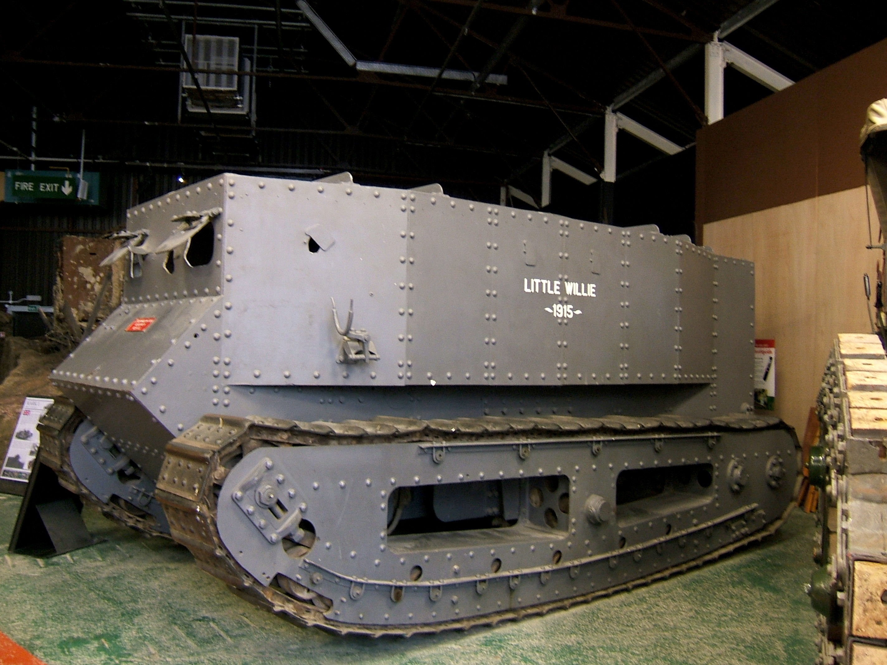
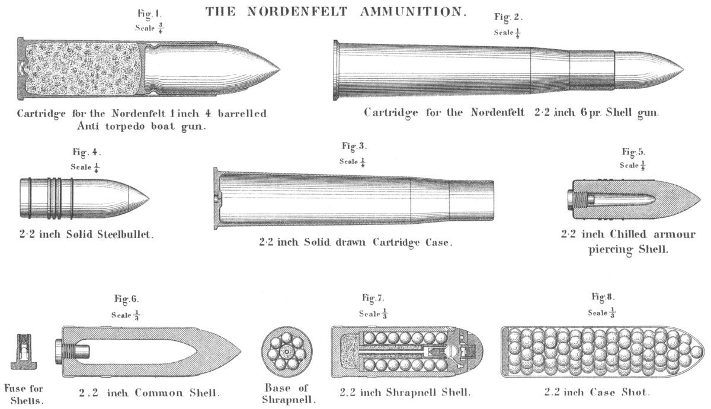
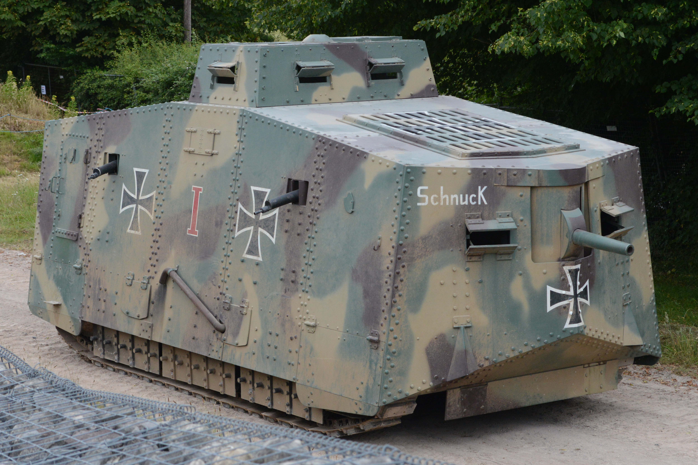

El primer tanque inventado
El desarrollo del tanque comenzó en Gran Bretaña. El primer prototipo operativo fue apodado "Little Willie" en 1915. Sin embargo, el primero en entrar en combate real fue el Mark I en la Batalla del Somme (1916). Tenía forma de romboide para no caer en las trincheras y revolucionó el campo de batalla al ser inmune al fuego de ametralladora.

Los Cañones
Los primeros tanques británicos (versión "Macho") estaban armados con cañones navales Hotchkiss de 6 libras (57 mm) montados en barbetas laterales. Estos cañones estaban diseñados originalmente para destruir pequeñas lanchas torpederas, pero resultaron ideales para volar nidos de ametralladoras alemanes y búnkeres de tierra.

El Tanque más temible
El A7V Sturmpanzerwagen alemán fue una auténtica fortaleza rodante. Aunque solo se fabricaron 20 unidades, su impacto psicológico fue brutal. Estaba fuertemente blindado, contaba con una enorme tripulación de hasta 18 hombres, llevaba un cañón frontal de 57mm y hasta seis ametralladoras, convirtiéndose en un monstruo imparable en combate cercano.
